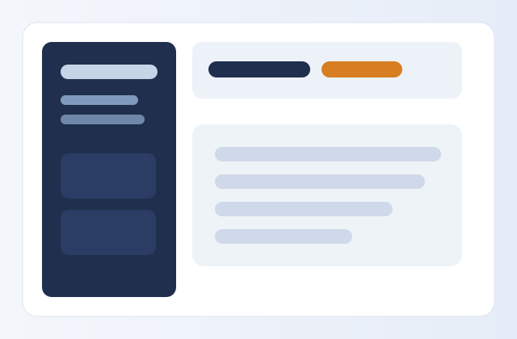
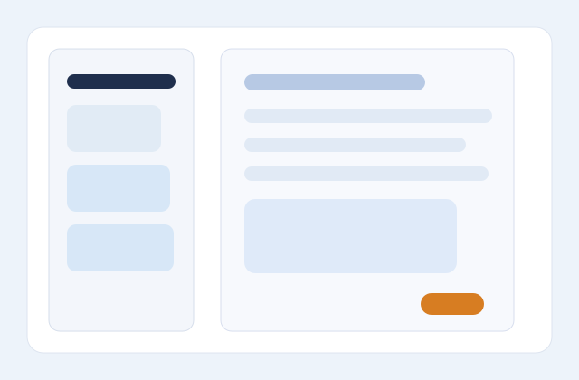

Part A — fast & fair (Week 16)
- WCAG basics: landing, titles, alt text
- landmarks, heading order, real buttons
- form labels tied to inputs
- color contrast that meets AA (4.5:1)
- perf: deferred JS, image dimensions, lazy loading
Weeks 16-17 • Laboratory Activity
Accessibility + performance, then an automated pipeline — on the SecureNotes app
The scenario
SecureNotes is built, secured (Weeks 13–14), and tested (Week 15). The API works and it’s safe. But the page people actually use is inaccessible and slow, and nothing stops a teammate from quietly breaking it later. This lab is the last mile: first make the front end fast and usable for everyone (Week 16), then build the pipeline that runs every check automatically on each push (Week 17), and ship it. Part A fixes it; Part B makes sure it stays fixed.
# inside the student folder python -m venv venv source venv/bin/activate # Win: venv\Scripts\activate pip install -r requirements.txt uvicorn app.main:app --reload # the app # open http://127.0.0.1:8000/app/ pytest -q many checks red
<html lang="en">, a real
<title>, and alt text on both images.
<main>, fix heading
levels, and turn the fake control into a real <button>.


Build .github/workflows/ci.yml with a matrix-free push and pull request flow.
On each run, the job checks out the repo, sets up Python, installs dependencies, and runs the test suite.
Open a pull request and let the Actions tab do its work. A green check means the change is ready to merge.